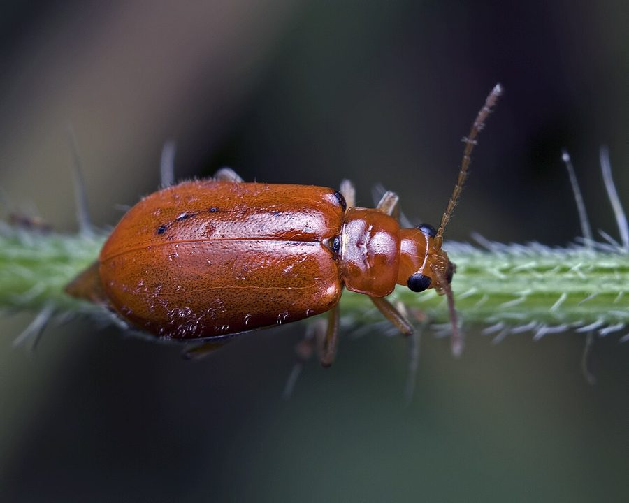

लाल कद्दू कीड़ाRed Pumpkin Beetle
Aulacophora foveicollis · Chrysomelidae · INS-0029

- Scientific name
- Aulacophora foveicollis (Lucas, 1849)
- Family
- Chrysomelidae
- Hindi
- लाल कद्दू कीड़ा
- Status here
- native
- IUCN
- not evaluated
When to look कब देखें
Expected mainly in March, April, May, June, July, August, September, October.
लाल कद्दू कीड़ा / Red Pumpkin Beetle
Aulacophora foveicollis (Lucas, 1849) — Chrysomelidae
लाल कद्दू कीड़ा (रेड पम्पकिन बीटल) — पूर्वी उत्तर प्रदेश के खेतों और गृह वाटिकाओं में पाया जाने वाला एक चमकीला लाल-नारंगी रंग का छोटा निवासी भृंग (beetle) है। यह मुख्य रूप से कद्दूवर्गीय (cucurbitaceous) फसलों जैसे कद्दू, लौकी, खीरा और तरबूज का एक प्रमुख हानिकारक कीट है। इसके वयस्क भृंग पत्तियों को खाकर उनमें छेद कर देते हैं (skeletonise), जिससे पौधे कमज़ोर हो जाते हैं। वहीं इसके पतले मटमैले लार्वा ज़मीन के नीचे जड़ों और तनों में छेद करके उन्हें भारी नुकसान पहुँचाते हैं। स्थानीय किसान इस पर नियंत्रण के लिए सुबह के समय राख (wood ash) छिड़कने या नीम के तेल (neem oil) का पारंपरिक छिड़काव करते हैं।
Quick Identification त्वरित पहचान
| Feature | Description |
|---|---|
| Size | Small, oblong beetle; body length 6–8 mm; width 3–4 mm |
| Colouration | Bright reddish-orange or yellowish-red dorsally; shiny and smooth surface |
| Elytra | Soft-textured, bright red-orange wing covers; completely cover the abdomen |
| Ventral Side | Abdomen is blackish-grey, covered with dense, short silvery pubescence |
| Antennae | Long, slender, 11-segmented antennae; yellow at the base, darkening toward tips |
| Behaviour | Drops to the ground or flies away quickly when disturbed; highly active in warm sunshine |
Field tip: Look on the leaves of bottle gourd, pumpkin, or sponge gourd in spring and summer. Search for small, oblong, bright orange-red beetles feeding on the upper leaf surface, creating characteristic circular leaf holes.
Morphology आकारिकी
Biometrics (typical measurements for adult specimens in local vegetable gardens):
| Measurement | Range |
|---|---|
| Body length | 6.0–8.0 mm |
| Wing length | 5.5–7.0 mm |
Body details: The adult beetle is small and elongated. The dorsal surface, including the head, thorax, and elytra, is entirely shiny, bright reddish-orange. The eyes are large, compound, black, and prominent. The pronotum (thorax shield) has a distinct transverse groove (fovea) across its middle, which is a key generic character. The elytra are finely punctured and cover the entire abdomen. The ventral side of the metathorax and abdomen is blackish, covered with fine white hairs. The legs are yellowish-orange.
Behaviour & Ecology व्यवहार और पारिस्थितिकी
Aggressive cucurbit feeder.
- Skeletonising leaves: Adults feed actively on leaves, flowers, and cotyledons. They feed in a circular pattern, cutting out discs of leaf tissue, leaving behind a skeletonised leaf network.
- Diurnal activity: Most active during the sunny, warm hours of the day. They bask on the upper leaf surface to warm up before feeding.
- Escape response: When a shadow falls on them or the leaf is shaken, they either drop instantly into the soil cracks (thanatosis or playing dead) or take flight rapidly.
Ecological Role पारिस्थितिक भूमिका
Herbivorous consumer.
- Crop damage: As a primary herbivore specializing in Cucurbitaceae, it consumes substantial green foliage, reducing the photosynthetic capacity of host plants.
- Food web link: Acts as an abundant food source for agricultural predators such as assassin bugs, praying mantises, and birds.
Life Cycle / Phenology जीवन चक्र
- Breeding: Peak breeding occurs in March–April and again during the monsoon.
- Egg laying: The female lays small, elongated, orange-yellow eggs in clusters of 10–30 in moist soil near the base of host plants. Eggs hatch in 5–8 days.
- Larval stage: The larva is a slender, creamy-white grub with a brown head, reaching up to 12 mm in length. It lives in the soil, boring into roots and underground stems for 15–20 days.
- Pupation: Pupation occurs in an earthen chamber in the soil, lasting 7–10 days before the adult beetle emerges.
Host Plants or Prey आहार
Host plants:
- Primary hosts: Bottle gourd (Lagenaria siceraria), Pumpkin (Cucurbita moschata), Cucumber (Cucumis sativus), Sponge gourd (Luffa aegyptiaca), Bitter gourd (Momordica charantia).
- Secondary hosts: Melons and other cucurbit weeds.
Predators / Natural Enemies शत्रु
- Birds: Small insectivorous birds like sparrows (such as [BRD-0007 House Sparrow]) feed on adult beetles.
- Insects: Predatory ground beetles (Carabidae) and assassin bugs feed on the larvae and adults.
- Fungal Pathogens: Soil fungi like Beauveria bassiana naturally infect soil-dwelling larvae.
Agricultural / Human Relevance कृषि प्रासंगिकता
Economic crop pest.
- Yield loss: Heavy infestations in Basti vegetable fields can destroy young seedlings completely, forcing farmers to re-sow.
- Traditional control: Farmers dust wood ash (लकड़ी की राख) on wet leaves early in the morning when the beetles are sluggish. The ash deters feeding and clogs the beetles' spiracles.
- Modern management: Regular application of neem oil spray (नीम का तेल) and deep summer ploughing to expose subterranean pupae to natural predators.
Expected Locally स्थानीय रूप से अपेक्षित
Not a field record. Written from published accounts for eastern Uttar Pradesh. No confirmed local sighting yet — if you have seen it, that is what the atlas needs.
अभी तक स्थानीय पुष्टि नहीं। यह विवरण प्रकाशित स्रोतों से है, किसी अवलोकन से नहीं।
Very common across Basti district, especially in blocks like Harraiya, Vikramjot, and Kaptanganj, where river-bed farming (diara) of melons and gourds along the Ghaghra River takes place. It is a major target of local agricultural extension advice.
Distribution वितरण
Global range: Widespread across Southern Europe, North Africa, the Middle East, Central Asia, and South-East Asia.
In India: Found in all agricultural plains, particularly abundant in the Indo-Gangetic plains.
In Uttar Pradesh: A common agricultural pest across all rural and suburban districts.
In Basti district / eastern UP: Observed in all vegetable-growing and agricultural areas.
Research Questions शोध प्रश्न
Anyone can investigate these | कोई भी इन प्रश्नों की जाँच कर सकता है
- How effective is wood ash compared to neem oil in reducing Red Pumpkin Beetle numbers in Basti vegetable gardens? / बस्ती के सब्जी बगीचों में लाल कद्दू कीड़े की संख्या को कम करने में लकड़ी की राख नीम के तेल की तुलना में कितनी प्रभावी है? — Test treatments on different plant plots.
- Which cucurbit crop is most preferred by the Red Pumpkin Beetle for feeding? / लाल कद्दू कीड़ा भोजन के लिए किस कद्दूवर्गीय फसल को सबसे अधिक पसंद करता है? — Perform choice tests using leaf discs.
- What is the search radius of an adult beetle in locating a new host plant patch? — Observe flight distances of marked beetles.
- Does the beetle feed more actively during morning hours or afternoon hours? — Record leaf area consumed at different times of the day.
- Does planting marigolds around pumpkin beds reduce the abundance of the beetles? — Compare beetle counts in monoculture vs. companion planted beds.
Similar Species मिलती-जुलती प्रजातियाँ
| Species | Key Difference | हिंदी |
|---|---|---|
| Aulacophora abdominalis (Black-bellied Pumpkin Beetle) | Orange-red dorsally, but has a solid black abdomen on the ventral side | काला-पेट कद्दू कीड़ा — काला पेट |
| Aulacophora coffeae (Orange Pumpkin Beetle) | Smaller body; yellowish-orange rather than deep reddish-orange | पीला कद्दू कीड़ा — पीला रंग |
| [INS-0028 Transverse Ladybird] (Coccinella transversalis) | Dome-shaped; black wavy bands on elytra; predatory, beneficial insect | सोनपंखी — गोल शरीर, काली पट्टियाँ |
Field rule: Oblong orange-red body, blackish-grey underside of the abdomen, and feeding damage on pumpkin or gourd leaves distinguish the Red Pumpkin Beetle.
Taxonomy & Classification वर्गीकरण
Original description. Pierre Hippolyte Lucas described the Red Pumpkin Beetle as Galeruca foveicollis in 1849 in Exploration Scientifique de l'Algérie. Zoologie. II. Coléoptères (p. 542). The type locality was Algeria. The genus name Aulacophora is derived from the Greek aulax (furrow) and phorein (to bear), referring to the groove on the pronotum. The specific name foveicollis is Latin for "pitted neck", describing the foveae on the thorax.
Subspecies. Monotypic — no subspecies are currently recognised.
Family and order placement. Placed in the order Coleoptera, family Chrysomelidae (leaf beetles), subfamily Galerucinae.
Phylogenetic notes. Aulacophora foveicollis belongs to the tribe Galerucini, representing a major lineage of specialist herbivorous beetles that co-evolved with cucurbit host plants, developing physiological tolerances to toxic cucurbitacins.
IUCN status rationale. Not evaluated (NE) by the IUCN Red List. It is a highly abundant agricultural pest species with no threats of extinction.
Photo Gallery फोटो गैलरी
References संदर्भ
- Lucas, P. H. (1849). Exploration Scientifique de l'Algérie pendant les années 1840, 1841, 1842. Zoologie. II. Histoire Naturelle des Animaux Articulés. Coléoptères. Imprimerie Nationale, Paris, p. 542. [original description]
- Atwal, A. S. (1986). Agricultural Pests of India and South-East Asia. Kalyani Publishers, Ludhiana.
- Mani, M. S. (1968). General Entomology. Oxford & IBH Publishing Co., New Delhi.
- ICAR-IIVR Bulletin (2018). Integrated Pest Management in Cucurbitaceous Crops. Indian Institute of Vegetable Research, Varanasi.
- ZSI Checklist — Chrysomelidae of Uttar Pradesh (2015).
- GBIF Occurrence Data — Aulacophora foveicollis, Uttar Pradesh (2010–2025).
Source file: species/fauna/insects/red_pumpkin_beetle.md